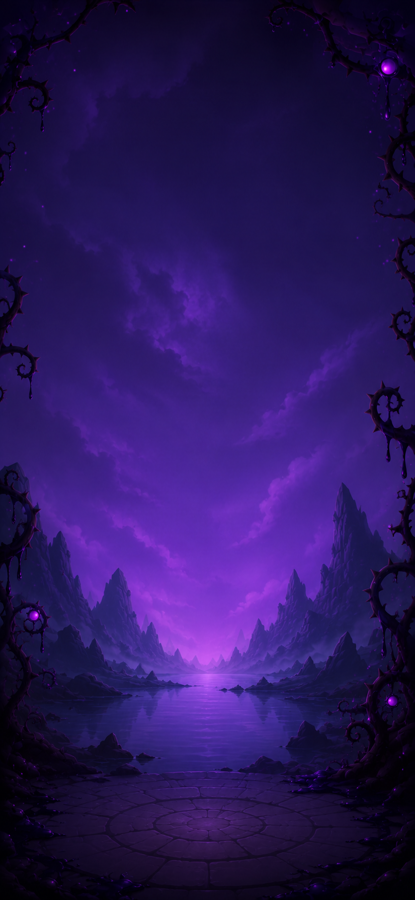

Chaque bouton joue un preset dans l'espace de design 720×1280.
Clique dans l'écran pour faire apparaître un +250 au point d'impact.
API — Pop.show(style, opts) renvoie
{ el, close, remove }.
word, sub, rot ·
at : nom d'ancre ou {x,y} en px design ·
hold : ms d'affichage plein (-1 = reste jusqu'à
close()) · enter / exit : ms des
animations · sfx : nom du son ou false pour
couper.
Sons : hit, whoosh, sparkle,
alarm, blip.
Portage — le bloc CSS POP LAYER → SKIN du
jeu, le module Pop → section 5 à côté d'Overlay.